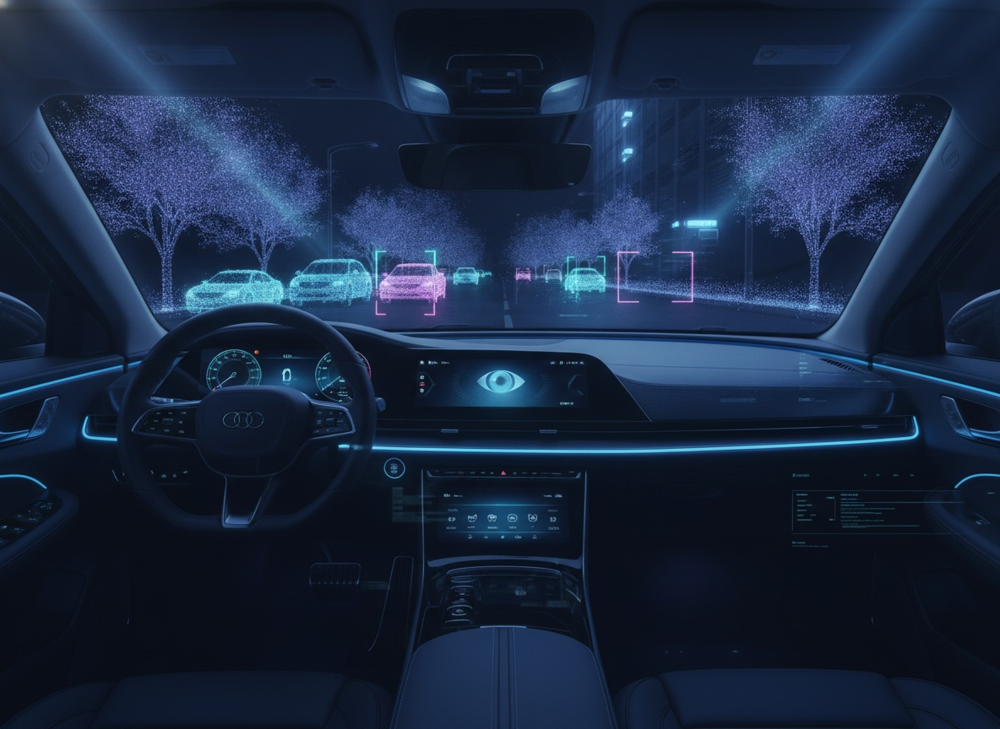
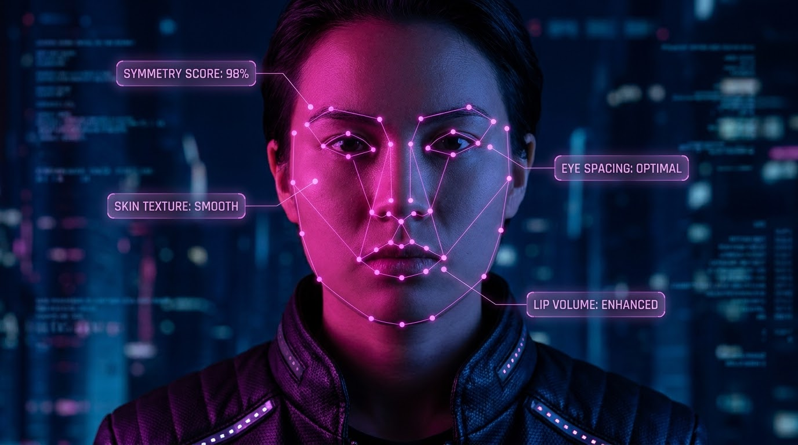
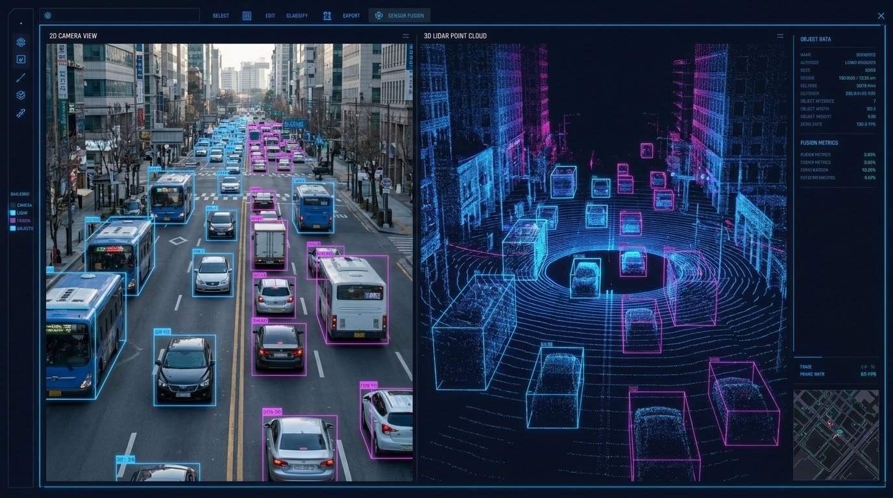
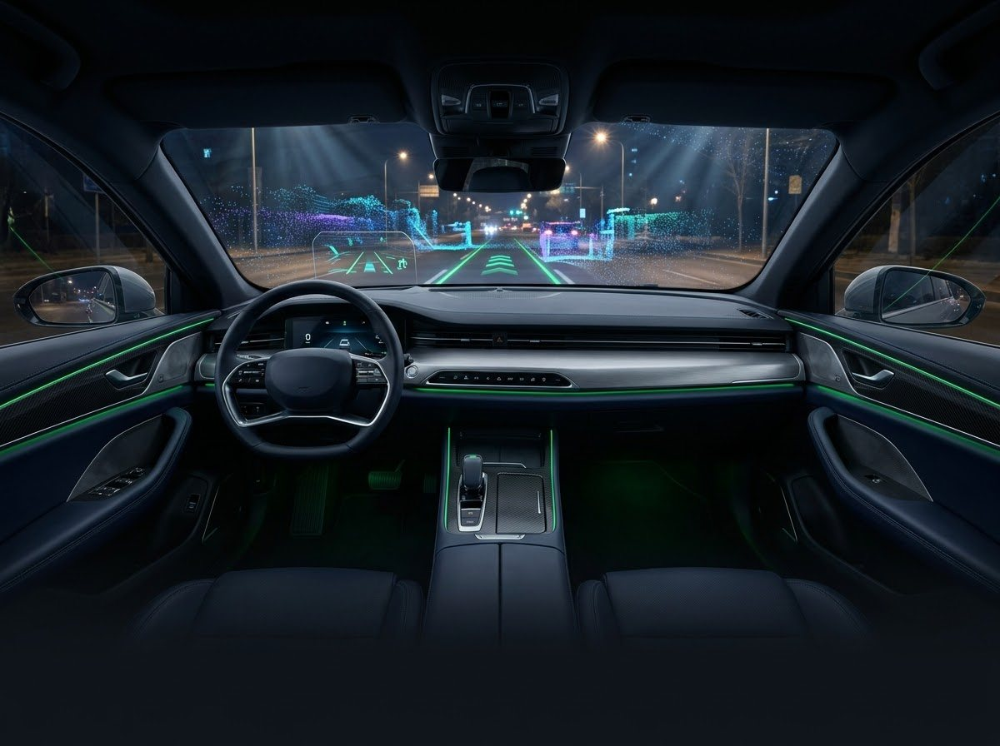
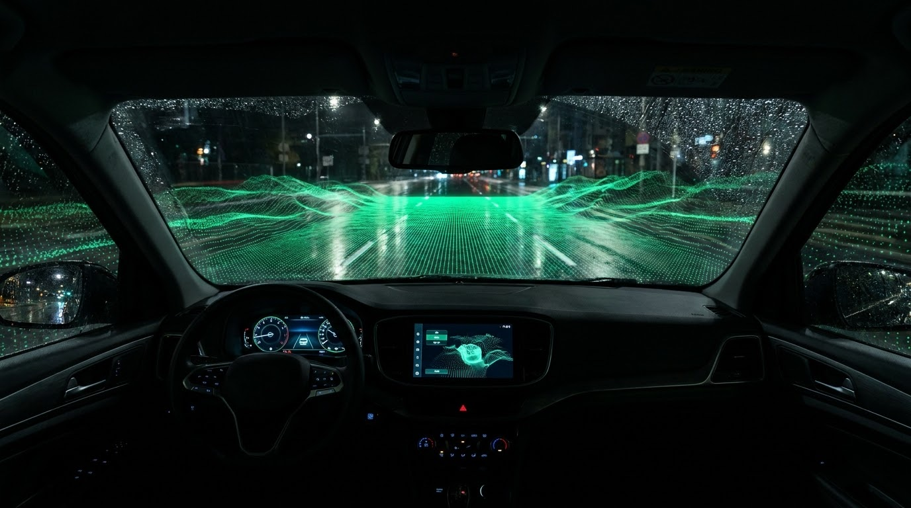
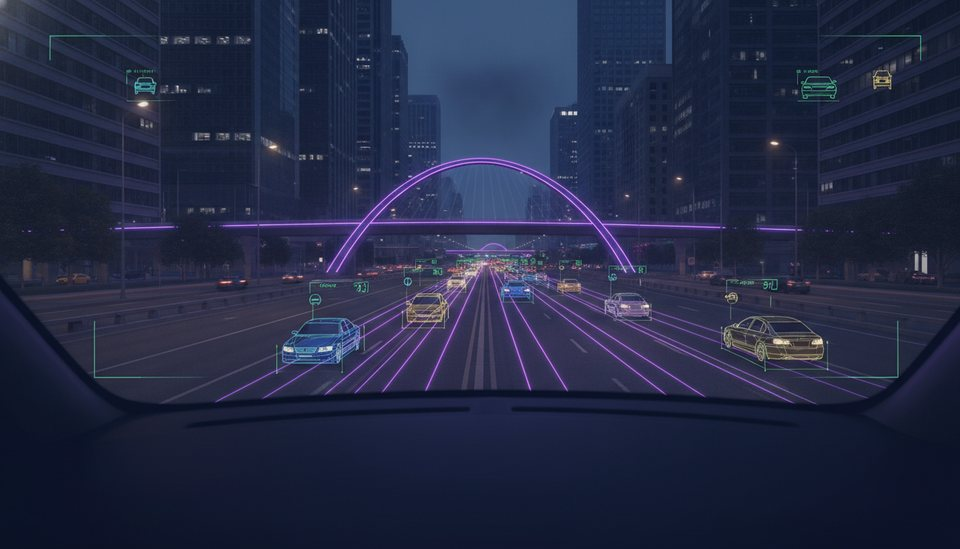
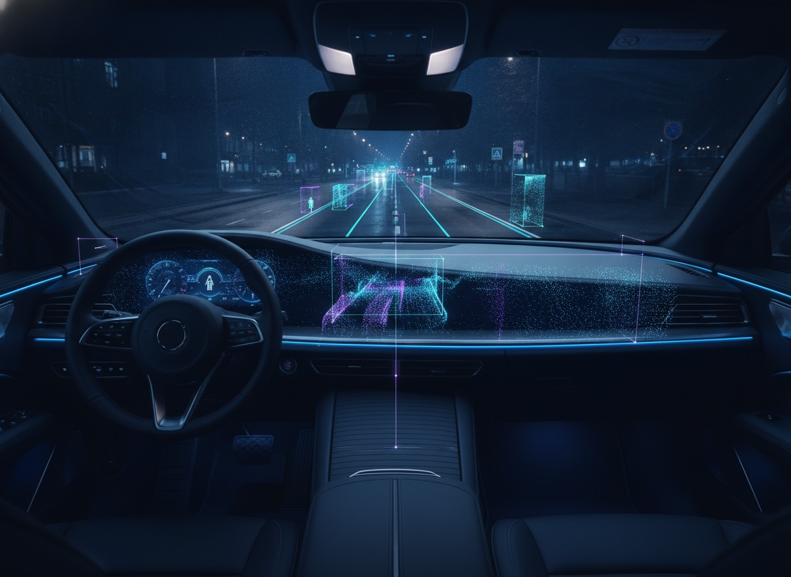

实车道路采集
按路线、时段、天气和交通密度组织车队，采集真实道路连续多传感器数据。
自动驾驶能力并非由单一算法决定。车辆持续感知道路环境，在海量行驶数据中发现关键场景，经高精度标注形成训练资产，再通过模型训练、仿真与实车验证，把难例重新送回数据生产链路。
摄像头、激光雷达、毫米波雷达、定位、惯性测量与车辆总线信号同步记录
按设计运行域、事件与模型置信度筛选长尾场景，形成可检索的场景库
完成二维、三维、四维、鸟瞰视角、车道拓扑与多传感器联合标注
按训练、验证和评测目标构建数据包，支撑感知、预测与规划迭代
回收误检、漏检、规划异常和接管片段，驱动下一轮针对性生产
根据车型、传感器方案和目标 ODD 定制采集路线与执行 SOP，覆盖城市、高速、园区、泊车等道路类型，并对时间同步、设备状态、路线完成度与场景命中率进行全过程质检。

按路线、时段、天气和交通密度组织车队，采集真实道路连续多传感器数据。

围绕驾驶员、乘员、语音交互与舱内状态，采集多视角视频、音频和车辆信号。

完成相机、激光雷达、毫米波雷达、定位与车辆总线数据的统一时间基准和标定参数管理。
覆盖城市道路、高速公路、园区、隧道、匝道、交叉口、停车场等道路结构，以及昼夜、逆光、雨雪雾等环境变量。
支持乘用车、商用车、无人配送与专用车辆，可按传感器数量、安装位和采样规格完成车辆改装与适配。
依据事件清单和命中规则组织定向任务，对施工、异形车、行人横穿、拥堵博弈等稀缺场景进行专项补采。
对传感器在线状态、时间戳漂移、画面遮挡、点云密度、路线偏差和有效里程实时检测，确保原始数据可用。
依托自研 AI 数据平台，统一管理多传感器标定、预标注、人工修正、连续帧追踪与多级质检，让目标、道路、拓扑和行为标签在时间与空间上保持一致。
支持目标框、关键点、车道线、可行驶区域、语义 / 实例分割和连续帧追踪，覆盖车辆、行人、骑行者、交通标志等类别。
提供三维目标框、点云分割、目标属性、航向速度与轨迹标注，并保持跨帧编号和遮挡关系一致。
联合相机与点云视图完成目标映射、投影校验和属性同步，服务多传感器融合感知模型训练。
基于连续帧构建动态目标轨迹、占用空间、场景流和鸟瞰语义，为时空感知与端到端模型提供监督信号。
标注车道中心线、边界、连接关系、停止线、路口结构与交通控制要素，支持拓扑推理和规划预测。
识别疲劳、分心、视线、手势、乘员状态和语音意图，支撑驾驶员监测、乘员监测、智能座舱与多模态交互模型。
从原始数据进入平台开始，完成清洗脱敏、场景切片、标注质检与数据集编排，按模型任务、版本和研发节奏交付可追溯的数据资产。
以成熟的平台工具、工程团队与质量体系承接自动驾驶数据规模化生产，在复杂传感器方案、快速版本迭代和安全合规要求之间保持稳定交付。
从采集方案、车辆与设备适配，到清洗、标注、质检和训练格式交付统一承接，减少多供应商协同成本和数据损耗。
平台支持图像、视频、点云与多传感器融合标注，内置预标注、连续帧传播、跨视图联动和版本管理能力。
不只检查标签准确率，还围绕场景覆盖、类别分布、ID 连贯、传感器对齐和交付一致性建立专项质检策略。
通过 ISO 系列安全认证并遵循隐私保护要求，支持物理隔离、专属作业区、权限分级与完整操作审计。
用可度量、可回溯的五步流程，把线上问题快速转化为采集与标注任务，缩短从问题发现到新版本验证的周期。
拆解 ODD、模型任务和验收指标，形成场景清单、标签规范与数据配比。
通过定向采集、历史数据检索和模型触发筛选命中目标片段。
人机协同完成全栈标注，并按任务特性执行分层质量控制。
按版本编排训练和评测数据，定位模型在细分场景中的能力缺口。
把误检、漏检、接管和异常规划样本重新加入生产队列，持续闭环。
围绕不同自动化等级、车辆形态和量产节点，组合采集范围、标注类型与交付规范，为核心研发场景提供针对性数据支持。

路口通行、行人横穿、加塞博弈、异形障碍物和复杂车道拓扑。

四维时序、鸟瞰占用、轨迹预测与端到端行为监督。

驾驶员与乘员监测、疲劳分心、手势视线与多模态语音交互。

停车位、可行驶区域、近场障碍物、园区道路与无人配送场景。